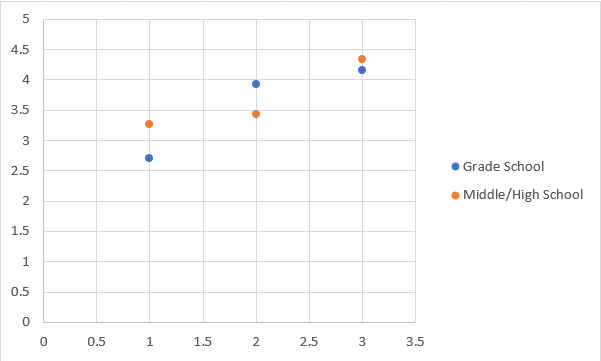

Fitts Law: Comparison of Grade Level for First Computer Class
Author: Michael Schneider
Description
For my Fitts Law study I tried to compare if there was a discernable difference in average throughput for students who had their first computer course in grade school (before 6th Grade/Middle School) and those who had their first computer course later on in Middle School/High School.
Setup for Testing
For testing, I used FittsStudy.exe and had each tester use my laptop's trackpad as an input device. No restriction was set for using the trackpad, each participant chose which hand they were most comfortable to work with. Also for this study, "first computer course" has been defined as the first formal instruction in either using a keyboard or how to operate a computer (such as using Microsoft Office or how to use a web browser). No distinction was made for when the participants first owned a computer or first actually used a computer in a non-formal/non-classroom setting.
Analysis
With only 6 participants, there isn't a significant amount of data to work with. The interesting point would be that the data almost falls into a series of pairs, where there is a close/similiar average throughput score for each category. Also the standard deviations for each group were relatively similiar (Grade School: 0.78 & High School: 0.58). This small dataset found no significant difference between learning to type & use a computer at a young age vs. as a teenager.
Demographics (listed in order of grade level)
| ID | Grade Level |
|---|---|
| 1 | 10th |
| 2 | 7th |
| 3 | 7th |
| 4 | 5th |
| 5 | 4th |
| 6 | 3rd |
Average Throughput Chart
